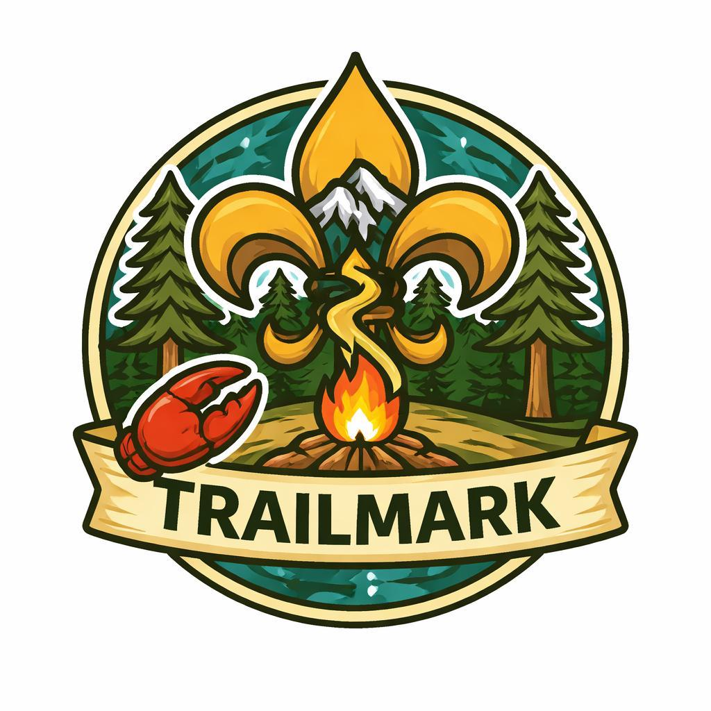

I'm the assistant cubmaster for Pack 57 in Palo Alto. I help our pack committee stay organized and support our scout leaders so everyone can focus on creating great experiences for our scouts.
Supporting Pack 57's volunteer leaders with organizational assistance
Committee meeting agendas, reminders, and follow-ups to keep everything organized and productive.
Clear, friendly emails and announcements that help families stay informed about pack activities and events.
Campouts, Pinewood Derby, Blue & Gold banquet, and service projects — tracking details so events run smoothly.
Supporting den leaders with tracking scout progress and requirements across all age groups.
Helping coordinate volunteers and resources to support all our pack activities and den meetings.
Maintaining pack traditions, calendar management, and institutional knowledge to support continuity.
Guided by Scout principles in everything I do
Reliable follow-through on commitments, tracking important details, and keeping deadlines.
Anticipating needs and preparing ahead of time so meetings and events run smoothly.
Warm and encouraging communication that respects everyone's time and volunteer contributions.
Every decision centers on creating the best possible scouting experience for our young people.
Serving scout families in Palo Alto with weekly den meetings and monthly pack activities
Our Dens